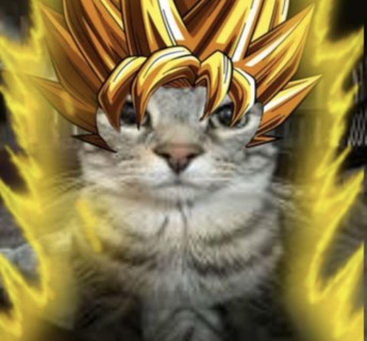
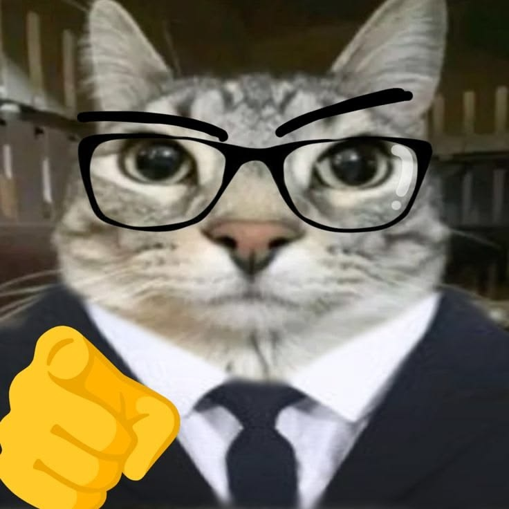

Nascido no ano de 2008 em Foz do Iguaçu, em uma época marcada pela virada tecnológica e pela força da conectividade que começava a moldar o mundo moderno, Ronrronaldo cresceu vendo sua comunidade se transformar através do diálogo e da união. Desde cedo, nas salas de aula e nos projetos sociais do bairro, ele entendeu que a verdadeira política não se faz com promessas distantes, mais com o ouvido atento às necessidades das pessoas e os pés firmes na realidade local. Sua trajetória é feita de trabalho duro, respeito ao próximo e uma vontade incansável de ver sua cidade prosperar com justiça e oportunidades para todos.
Agora, aos 18 anos, ele traz a energia e o compromisso dessa nova geração que não aceita o marasmo e exige mudança com responsabilidade. Esta campanha é o reflexo de sua história: transparente, participativa e focada em construir um futuro onde a inovação e o cuidado com as pessoas caminhem lado a lado. Ronrronaldo representa o vigor de quem nasceu no século XXI e está pronto para trabalhar incansavelmente por Foz do Iguaçu, transformando a esperança em ações concretas que melhorem a vida de cada cidadão.

Meus amigos e amigas! Eu nasci em 2008 e cresci vendo o nosso mundo mudar, mas a política continuou igual. Chega de promessas vazias e do marasmo de sempre! Me candidatei a presidente porque o Brasil precisa da coragem, da energia e da inovação da nossa geração para construir um futuro justo e cheio de oportunidades para quem realmente trabalha. Quero ser presidente para governar com transparência, investindo pesado em educação técnica de qualidade e tecnologia para gerar empregos e melhorar a saúde de cada cidadão. Nós não somos o amanhã, nós somos o presente! Vamos juntos, com o pé no chão e os olhos no futuro, transformar a esperança em ações concretas. Muito obrigado e vamos rumo à vitória!
